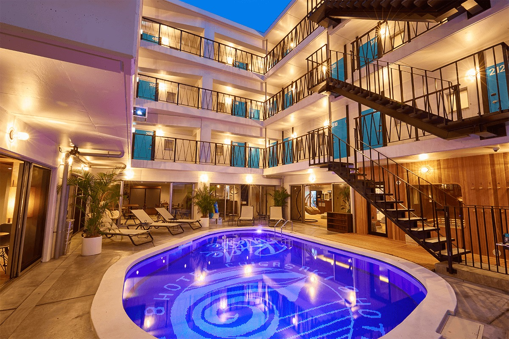
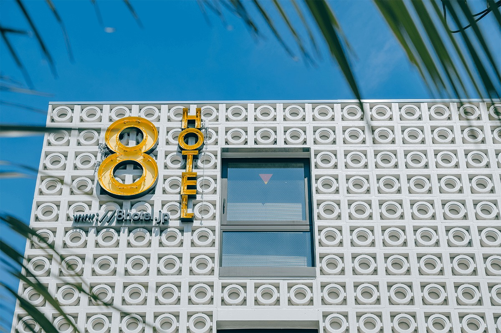
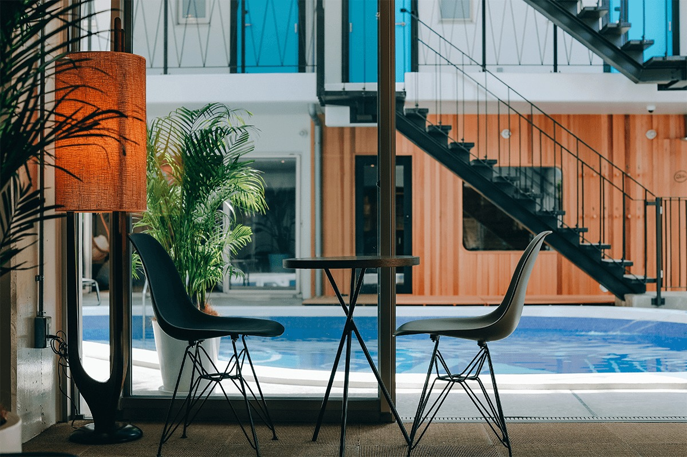
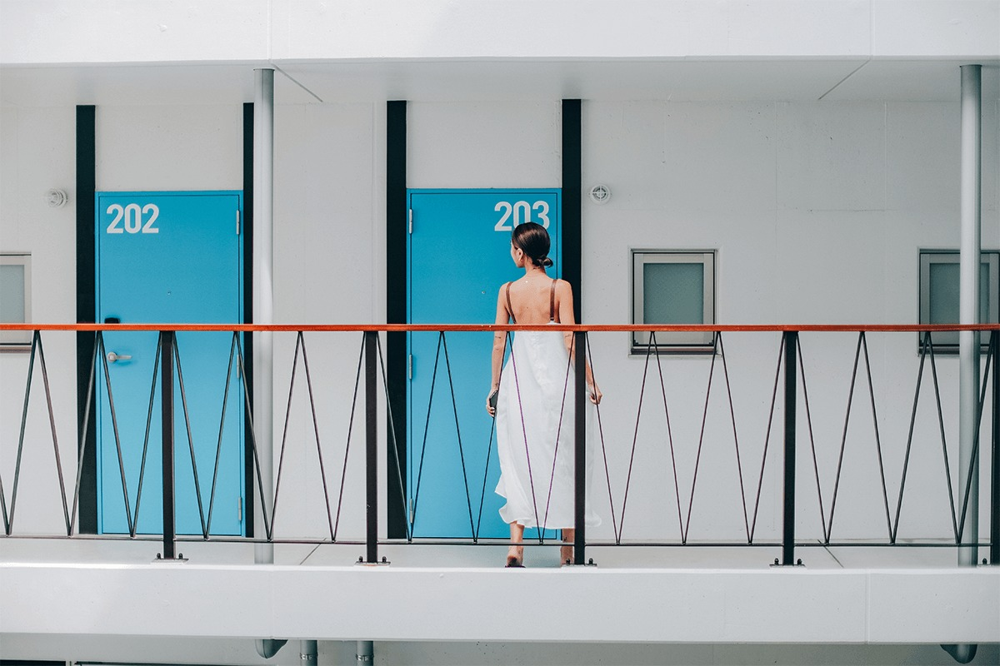
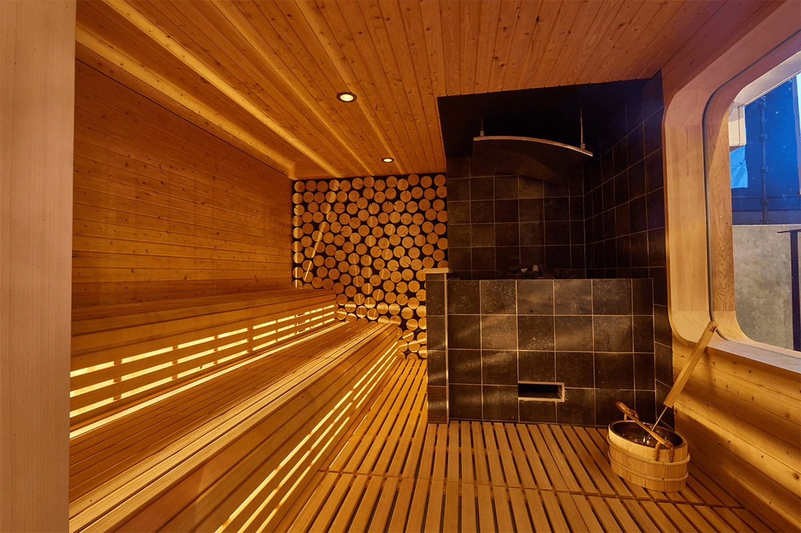
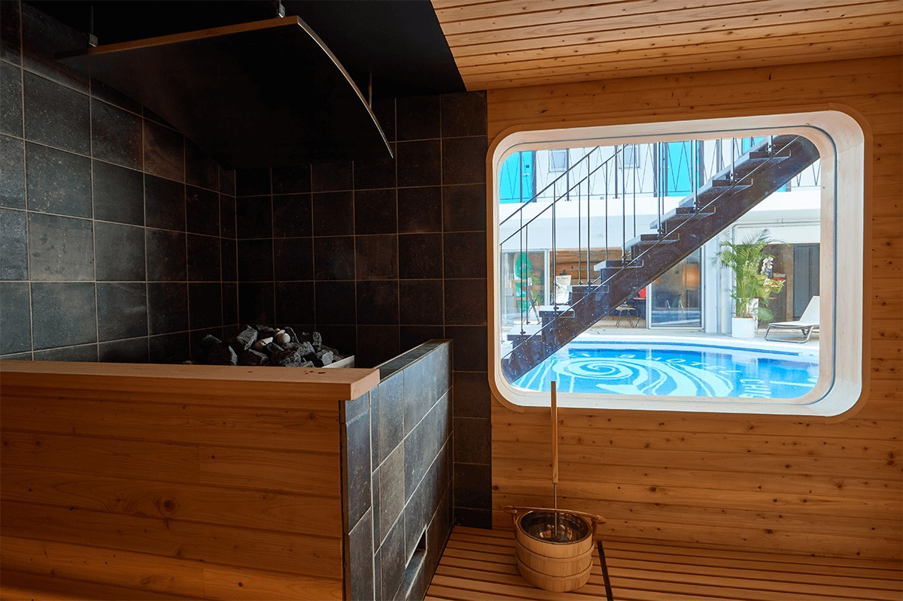
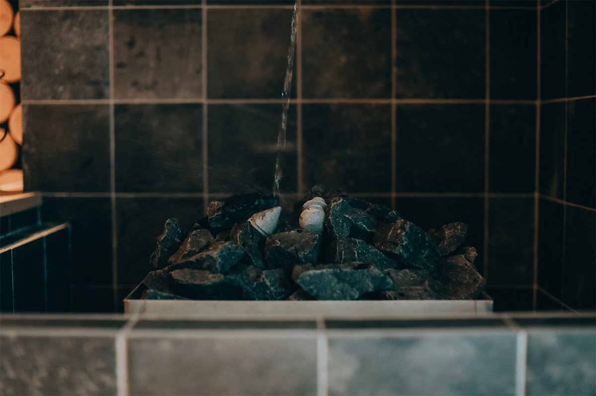
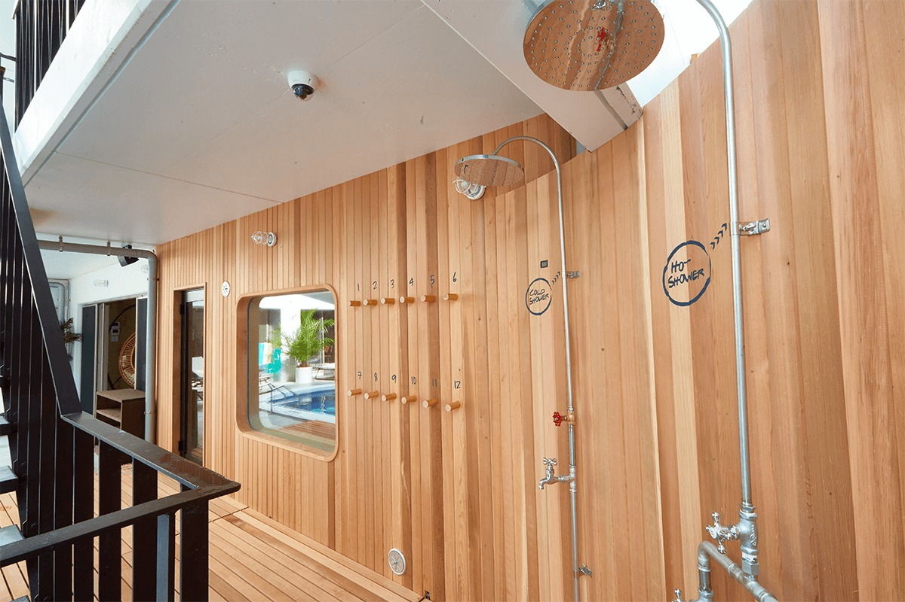
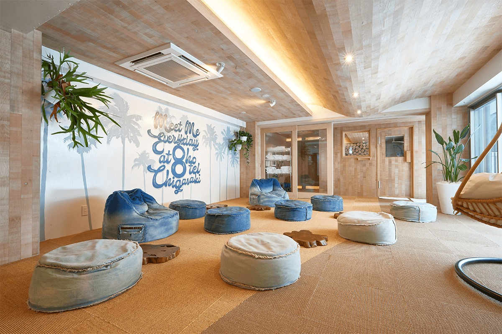
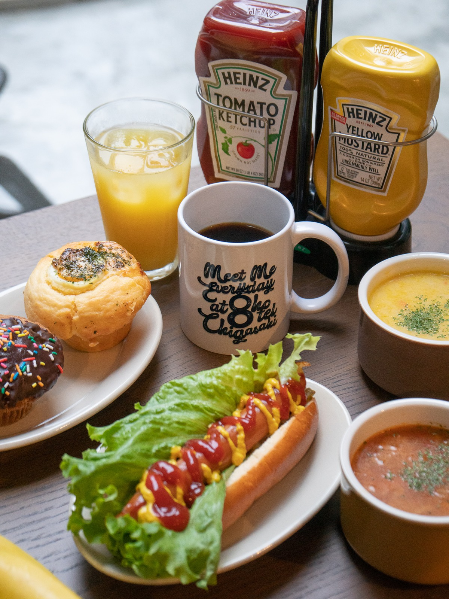

Префектура Канагава · Тигасаки · отель и сауна
8HOTEL CHIGASAKI: мотель на побережье Сёнан с финской сауной и бассейном во дворе

Если бы в неделе было восемь дней, какие идеи пришли бы человеку в этот лишний день? Из этой фантазии вырос 8HOTEL, а его отель в Тигасаки похож на мотель с заграничного побережья, только с настоящей финской сауной.
Идея
Восьмой день недели
Тигасаки это город на побережье Сёнан в префектуре Канагава. Отель стоит в четырёх минутах пешком от станции, а до пляжа гостей довозят.
8HOTEL задуман как база, через которую пляжная культура Сёнана выходит в мир: в отеле смешаны мода, искусство, еда и музыка. У входа гостей встречают пальмы, ставшие символом отеля. Белое четырёхэтажное здание окружает бассейн, а вокруг него собраны вход, лаунж и сауна. Планировка напоминает курорт где-нибудь на заграничном пляже.

Номера
Просто и по делу
Номеров два типа: одноместные и двухместные. Оба оформлены в стиле середины прошлого века, просто и функционально. Одноместных номеров 33, по 14 квадратных метров, двухместных три, по 22 квадратных метра.


Отдых
Бассейн, пляж и йога
Отдыхать здесь предлагают по-разному. Можно лениво провести день у бассейна, можно взять напрокат фирменный набор для пикника на пляже. До моря гостей бесплатно довозит трёхколёсное такси тук-тук. В 2021 году по воскресеньям в отеле проходили уроки йоги. Всё устроено так, чтобы гость выпал из будней и как следует расслабился.
Сауна
Сауна с видом на бассейн
Сауну задумывали как «сауну на пляжном курорте»: открытое и светлое место, куда без робости зайдут и молодые новички, и женщины. Привычной тёмной парилки здесь нет. В стене сделали большое окно, и зимой из тепла можно смотреть на двор с бассейном, не думая о холоде снаружи.

Финская сауна пахнет деревом японского кипариса хиноки. Поддавать пар на камни можно самому.


Во всех номерах есть халаты, и в них можно ходить по всему отелю. Поэтому в сауну легко заглядывать утром, днём и вечером, когда там меньше людей. Если забыли купальник, фирменный купальник и пляжные шлёпанцы 8HOTEL можно купить или взять напрокат.
После сауны ждёт душ с холодной водой 13 °C, а после душа бассейн, и это особенно приятно.

Пауза
Комната, чтобы прийти в себя
В Японии любители сауны говорят «тотоноу»: так называют состояние покоя после нескольких кругов жара и холода. Для этого в отеле есть отдельная комната. Её используют и для йоги, и просто чтобы полежать и отдохнуть.

Завтрак
Хот-дог на свой вкус
На завтрак здесь хот-доги, и собирает их каждый сам, с тем, что ему по вкусу. В 2021 году завтрак стоил 1000 иен.

8HOTEL CHIGASAKI
- Адрес
- префектура Канагава, Тигасаки, Сайвай-тё, 18-35
- Телефон
- +81 467-55-5175
- Номера
- 36 (33 одноместных по 14 м², 3 двухместных по 22 м²)
- Заезд / выезд
- 15:00 / 11:00
- Часы работы
- завтрак 7:00–11:00
- Цены / Вход
- завтрак 1000 иен (2021)
- Как добраться
- 4 минуты пешком от станции Тигасаки